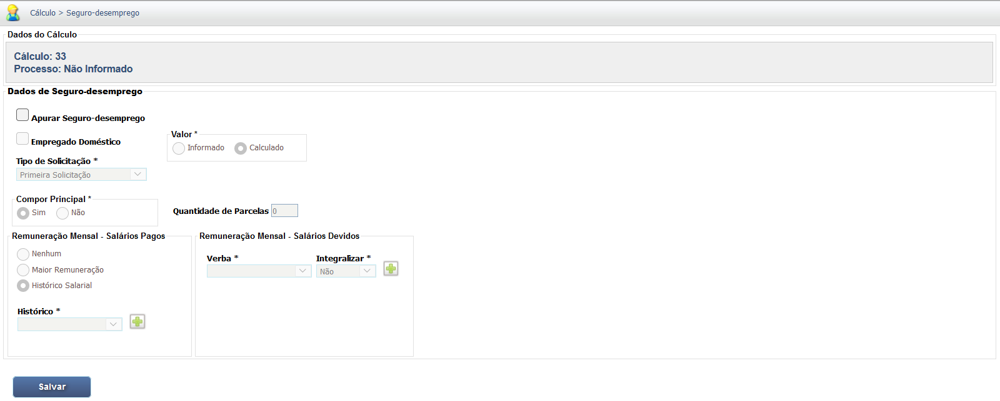

Manual Interativo de Cálculos Trabalhistas
Um guia completo e interativo para entender os cálculos na esfera judicial trabalhista.
Lançamento do Seguro-desemprego
O módulo de Seguro-desemprego no PJe-Calc serve para apurar se o reclamante faz jus ao benefício e calcular a indenização substitutiva, caso o juiz determine o pagamento em pecúnia por culpa do empregador.
- Para iniciar a apuração, marque o checkbox "Apurar Seguro-desemprego".
- Selecione o Tipo de Solicitação (Primeira Solicitação, Segunda ou Mais, etc.).
- Defina a base para a Remuneração Mensal - Salários Pagos (Nenhum, Maior Remuneração, Histórico Salarial).
- Para a Remuneração Mensal - Salários Devidos, é possível selecionar uma Verba*(ex: Salário Base) e indicar se ela deve ser Integralizada ou não.
Tela Principal de Configuração do Seguro-desemprego
Detalhe dos Campos de Remuneração Mensal
